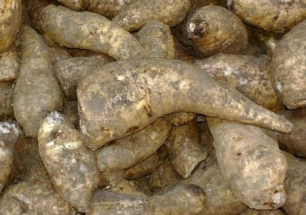
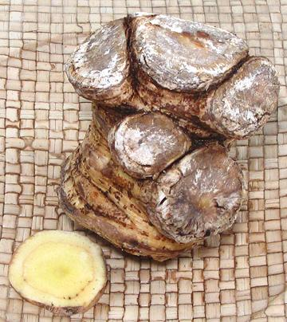

Arracacha

[Apio (Puerto Rico), Apio Criollo (Venezuela), Zanahoria Blanca (Ecuador),
Virraca (Peru), Mandioquinha / Batata-baroa (Brazil),
Arracacia xanthorriza]
This parsley root, native to the Andes region of South America is a major
crop in Brazil but popular all over South America and the Caribbean region.
The flesh may be white, yellow or purple. It is put to uses similar to
potatoes but has a more distinctive flavor and in some cultivars intense
color. Leaves are used as a flavoring herb and young stems are cooked as
a vegetable similarly to celery, though the stems are much thinner.
In appearance, the central root looks like a very tangled Celeriac
root, and carrot-like storage roots are appended to it. These storage
roots are the parts harvested for commerce and shown in the photo.
Brazil is now the center of Arracacha cultivation, and they are also
grown at higher elevations in Puerto Rico, where it is popular.
Arracacha is now grown in Vietnam where the starch is used to make
noodles.
Subst: parsnips combined with some celery should work.
Photo by Germarquezm licensed under
Creative Commons
Attribution-ShareAlike v3.0 Unported.
More on Parsleys

The Puerto Rican type is much different in appearance from the South
American ones in the top photo. They are sold as the main tap root,
which is like a very tangled Celeriac. This matches the description of
Apio a Puerto Rican cookbook in my posession. The blunt bottom of the
photo specimen is not cut, but is the root base.
Buying:
I have yet to find these in Southern California,
but I purchased the Puerto Rican type in the photo to the left on-line.
Cost was 2019 US $8.99 (plus shipping = $14.69) per pound.
Storing:
These tubers do not store well. At an ideal
temperature of 50°F/10°C they can last as much as 28 days -
less at both higher and lower temperatures. Loosely wrapped in the
refrigerator they can last 2 to 3 weeks. In their native regions
they are usually left in the ground until needed.
Cooking:
These tubers can be cooked similarly to
carrots or potatoes. They are too hard to eat raw.
Growing:
This is not easy in most regions. They like
temperatures around 70°F, grow very slowly at 50°F and don't
like temperatures over 90°F. The tops are very vulnerable to frost
and the time from planting to maturity is 10 to 13 months.
py_apioxz 190212 - www.clovegarden.com
©Andrew Grygus - agryg@clovegarden.com - Photos on this
page not otherwise credited are © cg1 -
Linking to and non-commercial use of this page permitted.